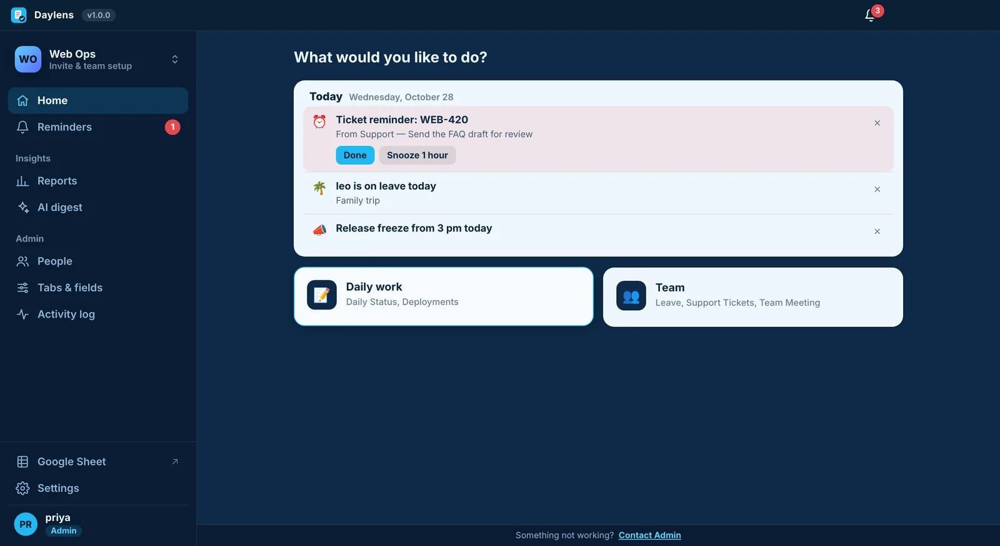
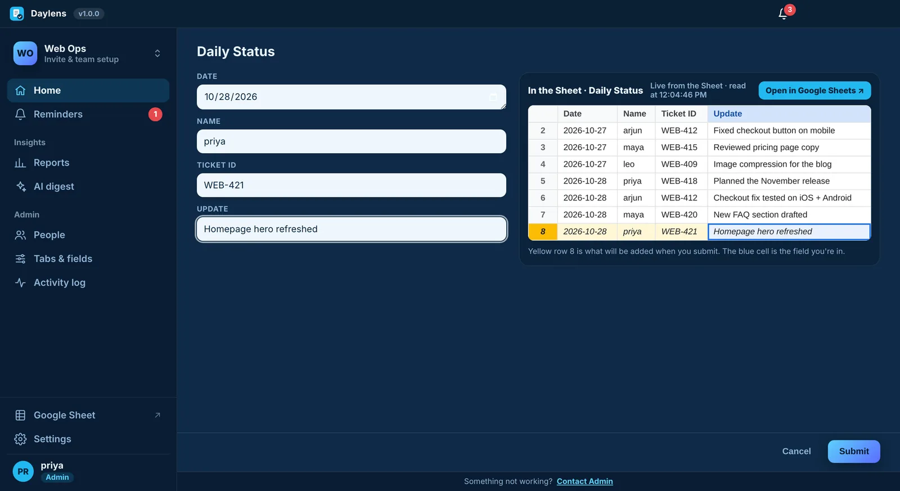
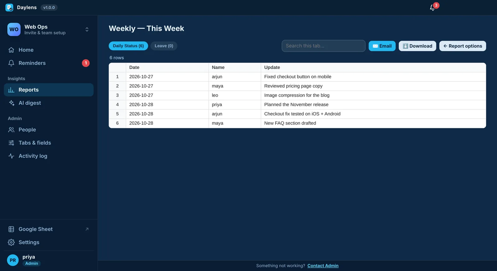
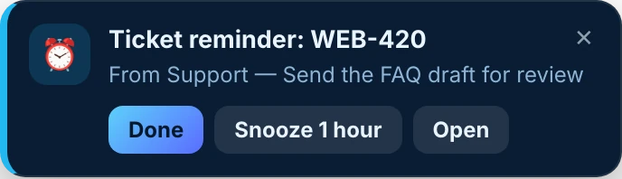

Your team's day, in a Google Sheet you own.
Daylens is a desktop app for team updates. Your team posts daily status, leave, tickets and meeting notes in Daylens, and every entry is saved as a row in a Google Sheet in your own Google Drive.
Set up your team in about 5 minutes. Teammates join with an invite code.
| Date | Name | Ticket ID | Update | |
|---|---|---|---|---|
| 5 | Oct 27 | arjun | WEB-412 | Fixed checkout button on mobile |
| 6 | Oct 27 | maya | WEB-415 | Reviewed pricing page copy |
| 7 | Oct 28 | arjun | WEB-412 | Checkout fix tested on iOS and Android |
| 8 | Oct 28 | priya | WEB-421 | Homepage hero refreshed |
Up and running before your next stand-up
Only the team admin needs a Google account. Everyone else signs in to Daylens with a username and password.
-
Create your team
The admin signs in with Google. Daylens creates your team's Sheet in the admin's Drive and sets it up, in about 5 minutes.
-
Invite your teammates
Send each person an invite code. They paste it into Daylens and choose their own password.
-
Log the day
Everyone posts updates, leave and tickets. Reminders stay on screen until they're done, and reports go out on your schedule.
Everything your team logs, in one place
Start from ready-made tabs for daily status, leave, tickets and weekly meetings, then rename them and add your own fields.

The bell and the top of Home show what needs you today. Each item stays until you dismiss it.

As you fill in an entry, Daylens shows the real row it will become. Once saved, it turns green.

View a report in the app, email it, or download it as an Excel file.

Due reminders stay in the corner of your screen until you mark them Done or snooze them.
- All your teams in one app
- Belong to more than one team? Switch between them in one click, without signing in again.
- Your tabs, your fields
- Rename tabs, add fields, set drop-down choices and group tabs into categories as your work changes.
- Accounts for everyone
- Admins add people, reset passwords and see an activity log of who changed what.
- AI digest, if you want it
- Turn a week of updates into a short summary, using your team's own free Gemini key.
- Microsoft Teams posts
- Optionally post report reminders, the day's highlights and digests to a Teams channel you choose.
- Keeps itself up to date
- New versions download in the background and ask before restarting. Admins update the team's Sheet in one click.
Your team's data stays in your Google Drive
Daylens has no servers holding your work. Entries, accounts and settings live in your team's Google Sheet, and the small script that runs your team runs in the admin's own Google account. The maker of Daylens can't open your Sheet.
When a team is created: its team ID, its name and the app version. Nothing else, and never your entries.
| Google's wording | Why Daylens needs it |
|---|---|
| See, edit, create and delete only the specific Google Drive files you use with this app | To create your team's Sheet. Daylens can't see any other file in your Drive. |
| Create and update Google Apps Script projects | To install your team's script in that Sheet, and to update it when a new version comes out. |
| Create and update Google Apps Script deployments | To publish the script as your team's private link, which the Daylens app talks to. |
| See your primary Google Account email address | To show which Google account owns your team's Sheet. |
Only the team admin signs in with Google, and only to create or update the team. The sign-in stays encrypted on the admin's computer. Read the privacy policy for the full details.
Get Daylens
For Windows and Mac. Once it's installed, Daylens updates itself and asks before restarting.
See what's new in each version on the releases page.
- Team adminOpen Daylens and choose Create a new team. The app walks you through it.
- TeammatesOpen Daylens, choose Join my team, and paste the invite code from your admin's message.
- First installWindows may say it protected your PC: choose More info, then Run anyway. On a Mac, if it won't open, go to System Settings → Privacy & Security and choose Open Anyway.
- QuestionsEmail support.daylens@gmail.com.